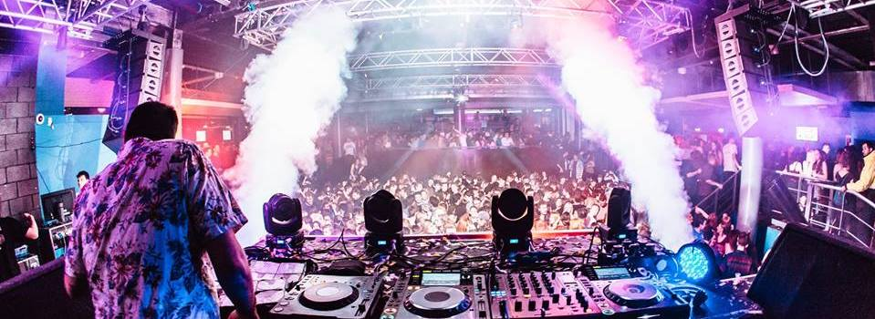
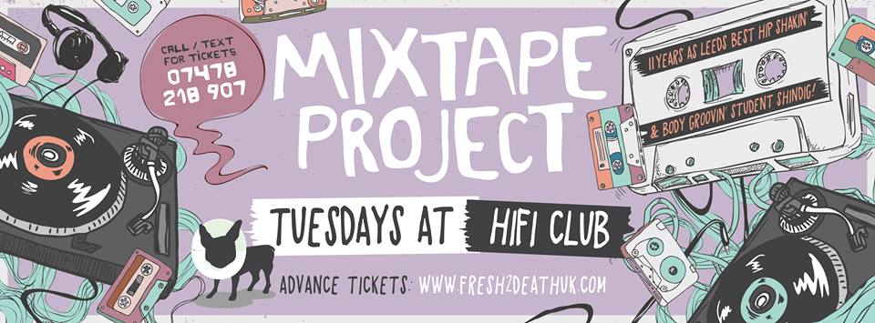
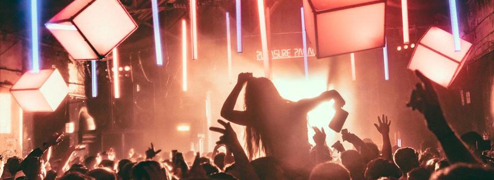

Leeds Freshers Guide: Nights Out!
1 / 3

Leeds Uni Union: Fruity
- Fruity is a classic Leeds night out - full of cheesy tunes and sing alongs, you're guaranteed a good night every time!
- Held every night at the Union, it's a fun and convenient night out - a must-do for every fresher!
- Grab your tickets here for just £4 and dance your way into the night!
2 / 3

Hifi: Mixtape Project
- Mixtape Project is undoubtedly the best place to go for a good sing-along
- It takes place every Tuesday in the city centre (tickets here!), where you can expect old-school bangers and rum and ting aplenty!
- To make the most of the night, head to Bierkeller first for a couple of steins and some karaoke!
3 / 3

Beaverworks: Good Life
- Good Life is a less regular event: happening about every 1 or 2 months, this party is worth the wait
- Good Life events have different themes every time, so expect crazy decorations, a variety of DJs and a lot (a lot!) of glitter!
- Tickets here starting from £8!
❮
❯